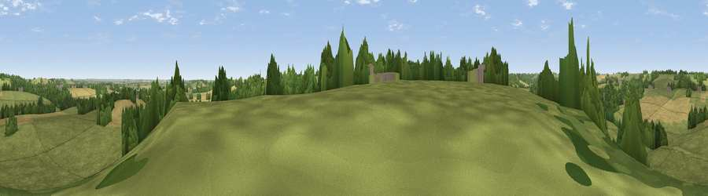

Viewpoint near Wigginton
#39543 in England · top 86% of its area beats it · near WiggintonThe view, rendered

A 360° render of this exact spot computed from the terrain model, tree cover and land cover — summer colours, afternoon light, calibrated against photographs of famous viewpoints. Real trees, hedges and buildings will differ in detail.
The panorama
Grey silhouette: terrain skyline in each direction (720 bearings, Earth curvature and refraction included). Dashed green: skyline with trees (+15 m) and buildings (+8 m) as obstacles. Blue strip: how far the ground is visible on each bearing.
Where the view opens
Wedge length = distance to the farthest visible ground on that bearing (vegetation-aware). Rings at 10, 25 and 50 km.
What fills the view
68% grassland · 20% cropland · 11% woodland ·
Angular shares of the visible panorama (visual magnitude), not map area. Landscape diversity 0.37 (0–1 Shannon).
Key numbers
More beautiful places nearby
The staircase of upgrades: each row has a higher view potential than everything closer. Driving times are estimates from straight-line distance, calibrated against real road routing — check an actual route before setting out.
| Place | Direction | Drive | Score |
|---|---|---|---|
| Viewpoint near South Newington | ESE · 2 km | ~5 min | 45.1 |
| Viewpoint near Milcombe | NNE · 3 km | ~7 min | 49.2 |
| Viewpoint near Whichford | WNW · 6 km | ~14 min | 52.3 |
| Viewpoint near Whichford | WNW · 7 km | ~14 min | 57.8 |
| Epwell Hill | NNW · 10 km | ~19 min | 60.6 |
| Shenlow Hill | NNW · 11 km | ~21 min | 65.9 |
| Viewpoint near Upper Tysoe | NNW · 11 km | ~21 min | 70.4 |
| Viewpoint near Radway | N · 16 km | ~28 min | 71.7 |
51.99066, -1.42216 · source: screening · position refined by local search. Computed location — check access rights before visiting.